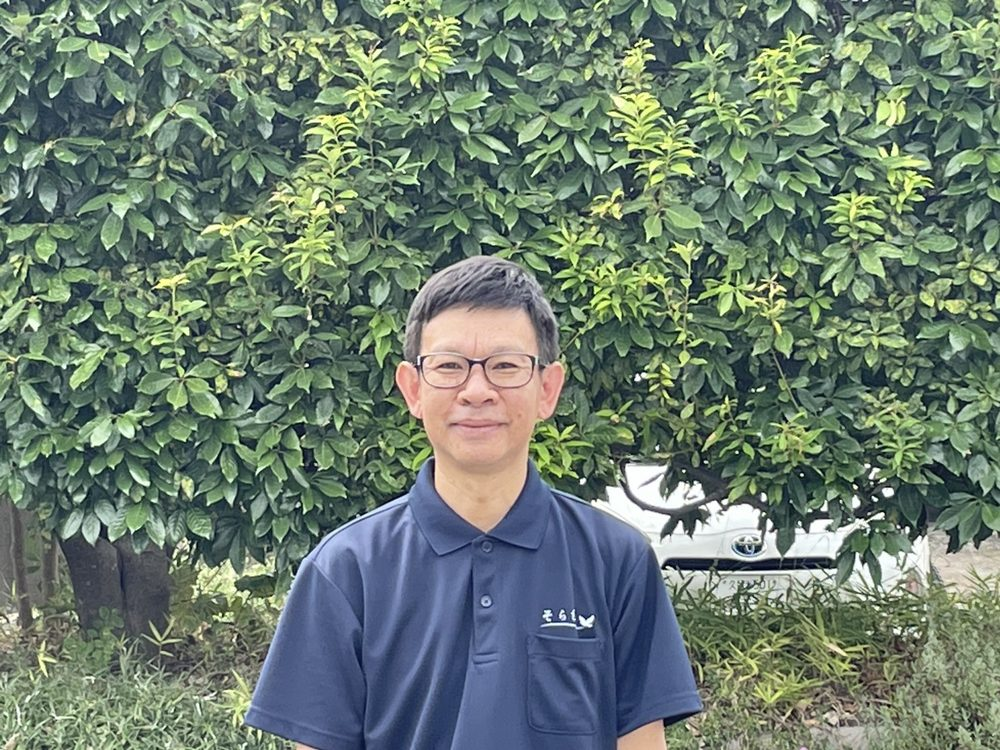
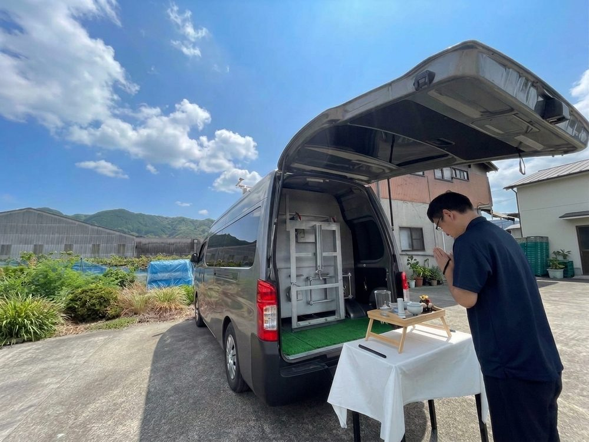
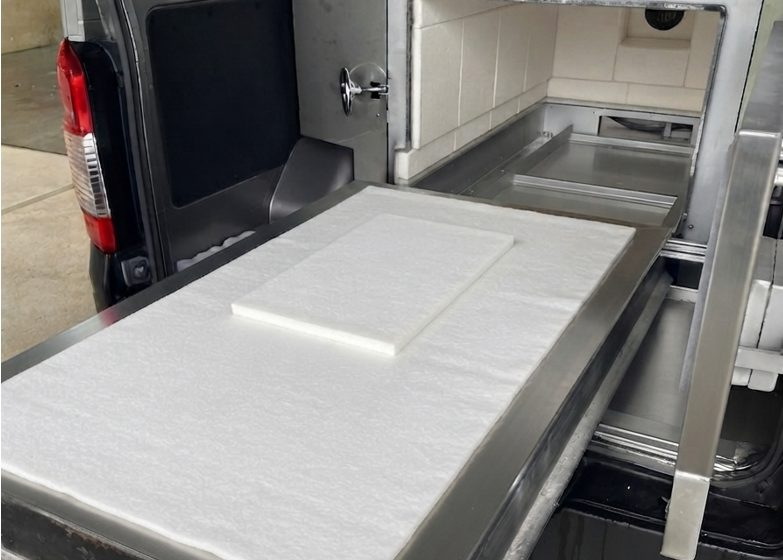

いつもの場所から、空へ。
だからこそ、お別れを急かしません。
対応エリア福岡県・佐賀県・大分県
（日田市・玖珠町・九重町）
福岡県・佐賀県・大分県の訪問ペット火葬。
火葬車で、ご自宅までお伺いし火葬いたします。
お電話から、ご供養まで。
ぜんぶ、同じ手で。
お電話をお受けした者が書いたおぼえ書きが、そのまま当日の現場に渡ります。
お話しいただいたことは、そのまま当日に持ってまいります。
ラブラドールやゴールデンレトリバーなど、体重50kgまでの大きなわんちゃんまで対応できる火葬炉を搭載しています。「大型犬は断られてしまった」という方も、あきらめずにご相談ください。
お電話をお受けするところから、ご火葬・ご供養まで、すべて私どもが直接行っております。取り次ぎがないぶん、お話しいただいたことは、そのまま当日に持ってまいります。流れ作業のご葬儀はいたしません。
お別れは時間を選びません。深夜・早朝でもお電話をお受けしています。まだお決まりでなくても、「これからどうすれば」というご相談だけでもかまいません。

お電話をお受けするのも、お伺いしてご火葬・ご供養をするのも、私どもです。受付だけの係はおりません。
はじめてのお別れは、何をすればよいか分からないものだと思います。お電話をいただいたその場で、ご安置の仕方や、お迎えまでにしてあげられることをお伝えします。
お話しいただいたことは、そのまま当日に持ってまいります。急がず、ご家族のお時間に合わせてお見送りいたします。
訪問ペット葬儀 そら色
代表 宇都宮 敏隆
ご家族のお気持ちとご都合に合わせて、3つのプランからお選びいただけます。
ご火葬・ご供養までお任せいただくプラン
9,900円（税込）〜
ご自宅までお伺いしてお子さまをお預かりし、責任をもってご火葬・ご供養いたします。お仕事などでお時間が取れない方、お骨のお戻しを望まれない方に。
ご火葬はお任せ・ご遺骨はお手元に
12,900円（税込）〜
ご火葬は当方にお任せいただき、ご火葬後にご遺骨を骨壺に納めてお返しいたします。お立会いは難しいけれど、お骨は手元に残したいという方に。
最後までご家族の手でお見送り
15,900円（税込）〜
ご自宅の前などでお別れからご火葬までお立会いいただき、ご家族の手でお骨上げをしてご遺骨をお納めいただけます。人のご葬儀と同じように見送りたい方に。
体重に応じた明朗料金です。
| 体重の目安 | お引き取り供養返骨なし | 一任火葬返骨あり | 立会火葬お立会い・お骨上げ |
|---|---|---|---|
| 500g以下 | 9,900円 | 12,900円 | 15,900円 |
| 500g超〜1kg | 13,200円 | 16,200円 | 19,200円 |
| 1kg超〜3kg | 17,600円 | 20,600円 | 23,600円 |
| 3kg超〜6kg | 22,000円 | 25,000円 | 28,000円 |
| 6kg超〜9kg | 25,000円 | 28,000円 | 31,000円 |
| 9kg超〜12kg | 29,000円 | 32,000円 | 35,000円 |
| 12kg超〜15kg | 33,000円 | 36,000円 | 39,000円 |
| 15kg超〜20kg | 39,000円 | 42,000円 | 45,000円 |
| 20kg超〜25kg | 46,500円 | 49,500円 | 52,500円 |
| 25kg超〜30kg | 54,000円 | 57,000円 | 60,000円 |
| 30kg超〜35kg | 61,500円 | 64,500円 | 67,500円 |
| 35kg超〜40kg | 69,000円 | 72,000円 | 75,000円 |
| 40kg超〜45kg | 76,500円 | 79,500円 | 82,500円 |
| 45kg超〜50kg | 84,000円 | 87,000円 | 90,000円 |
お迎えの日まで、きれいな状態で過ごさせてあげるための方法です。
お電話でも丁寧にご案内しますので、慌てずにご連絡ください。
亡くなってから2〜3時間で身体が硬くなりはじめます。硬くなる前に、手足をやさしくお腹の方へ折りたたみ、まぶたを閉じてあげてください。濡らしたタオルやガーゼで身体を拭いてあげましょう。
タオルやペットシーツを敷いた箱・かごに寝かせてあげてください。お気に入りの毛布があれば、いっしょに掛けてあげると安らかな姿になります。
冷房の効いたお部屋で、タオルにくるんだ保冷剤や氷を、お腹と頭のまわりに当てて冷やしてください。傷みやすいお腹を中心に冷やすのがポイントです。保冷剤は2時間おきを目安に取り替えてあげてください。
直射日光の当たらない、涼しいお部屋にご安置ください。エアコンのある部屋なら設定温度を低めにしていただくと安心です。
ご安置できる日数の目安：しっかり保冷した状態で、夏場はおよそ1〜2日、冬場はおよそ2〜4日が目安です。ご事情によりお日にちが空く場合も、対処方法をご案内しますのでお気軽にお電話ください。
ご自宅の前が、その子だけの葬儀場になります。


煙やにおいが出にくい構造の火葬炉を搭載した専用車です。外からは火葬車と分かりにくい外観で、ご近所の目が気になる方も安心してご利用いただけます。
ご自宅の駐車場や近隣の安全な場所でご火葬できますので、移動の負担がなく、住み慣れた場所からお見送りいただけます。
温度管理のできる火葬炉で、お身体の大きさに合わせて丁寧にご火葬します。お骨上げができるよう、ご遺骨をきれいに残すことを大切にしています。
上記にないどうぶつも、お見送りできる場合がございます。まずはお電話でご相談ください。
0120-050-221に24時間いつでもお電話ください。
お子さまの種類・体重、ご希望のプランやお日にちをお伺いします。ご相談だけでもかまいません。
ご都合に合わせてお伺いの日時を決め、体重に応じた料金を事前にはっきりお伝えします。
当日までのご安置の方法もご案内いたします。
お約束の日時に、火葬設備を備えた専用車でご自宅までお伺いします。
ご火葬の前に、ゆっくりとお別れのお時間をお取りいただけます。
お花やお手紙など、いっしょに送ってあげたいものがあればご用意ください。
心を込めてご火葬いたします。立会火葬ではご家族にお立会いいただけます。
立会火葬ではご家族の手でお骨上げを、一任火葬ではご火葬後に骨壺に納めてご返骨いたします。お引き取り供養でお預かりしたご遺骨は、当方が責任をもってお預かりし、半年に一度、合同墓地へのご埋葬または散骨により、心を込めてご供養いたします。廃棄物として処分することは決してございません。
福岡県・佐賀県・大分県にお伺いします
火葬設備を積んだ専用車で、ご自宅までお伺いします。
上記以外の地域も、お伺いできる場合がございますので、まずはお電話でご相談ください。
お伺いできるお時間は、その日のご予約の状況によって変わります。お電話をいただいた時点で、いちばん早くお伺いできるお時間をお伝えします。
遠方の地域はご予約制となりますので、お早めにご相談いただけると確実です。
福岡南店NEW
〒811-1311
福岡市南区横手3-31-13 徳永ビル105
福岡市・春日市・大野城市・那珂川市・太宰府市・筑紫野市 ほか、福岡市方面のお客様の窓口です
福岡市にお住まいの方へ 詳しくはこちら →うきは本店
〒839-1406
福岡県うきは市浮羽町高見1726-13
うきは市・久留米市・朝倉市・八女市・佐賀県・大分県 ほかのお客様の窓口です
どちらの店舗も、ご相談・ご予約はお電話（0120-050-221）で承ります。ご来店での受付は行っておりません。ご火葬は、ご自宅などお客様のご指定の場所へお伺いして行います。
その日のご予約の状況によって変わりますので、お電話をいただいた時点で、いちばん早くお伺いできるお時間をお伝えします。前日までにご予約いただけると確実ですが、当日でも空いていればお伺いできます。遠方の地域はご予約制となりますので、お早めにご相談ください。お迎えまでのご安置の方法も、お電話でご案内いたします。
まずは涼しい場所に寝かせてあげてください。タオルなどを敷いた箱に安置し、保冷剤や氷でお腹と頭のあたりを冷やしていただくと、数日はきれいな状態を保てます。詳しくはペットのご安置・保存の方法をご覧ください。お電話でもご案内いたします。
はい、体重50kgまでの大型犬に対応しています。ラブラドールやゴールデンレトリバーなどの大きなわんちゃんもお見送りできます。他社で断られてしまった場合も、ぜひご相談ください。
はい、0120-050-221 は24時間365日つながります。深夜・早朝でも遠慮なくお電話ください。ご火葬は22:00〜翌6:00のみ基本料金の20%増しとなりますが、ご相談のお電話にお金はかかりません。翌日以降のご予約でしたら通常料金でご案内できます。
火葬設備を備えた専用車でお伺いしますので、ご自宅の駐車場や近隣の安全な場所で行えます。住み慣れた場所から見送ってあげられるのが訪問火葬の良いところです。駐車場所などはご予約の際にご相談ください。
ご心配いりません。来客用スペースや近隣のコインパーキング、広めの路肩など、停められる場所をこちらでお探しします。ご予約のお電話のときに、お住まいの状況をお聞かせください。
現金のほか、クレジットカード・電子マネー・QRコード決済にも対応しています。ご訪問先で決済端末をお使いいただけますので、当日に現金をご用意いただく必要はありません。お支払いは、ご火葬が終わってからで結構です。
・クレジットカード：Visa／Mastercard／JCB／アメリカン・エキスプレス／ダイナースクラブ ほか
・電子マネー：iD／QUICPay／交通系IC
・QRコード決済：PayPay／d払い／au PAY／メルペイ／WeChat Pay／Alipay+
ご事情がある場合は、お電話のときにご相談ください。
トラブル防止のため、ご予約の変更やキャンセルはできるだけお早めにご連絡ください。ご事情による変更は可能な限り対応いたします。
ご予約時間を過ぎてもご連絡がない場合は、キャンセル扱いとさせていただく場合がございます。出発後の日時変更につきましても、キャンセルと同じ費用を頂戴いたします。
| 出発前の 変更・キャンセル | 無料 |
|---|---|
| 出発後〜到着前の 変更・キャンセル | ご予約料金の30% |
| 到着後の 変更・キャンセル | ご予約料金の50% |
| 名称 | 訪問ペット葬儀 そら色 |
|---|---|
| 代表 | 宇都宮 敏隆 |
| 本店所在地 | 〒839-1406 福岡県うきは市浮羽町高見1726-13 |
| 福岡南店 | 〒811-1311 福岡県福岡市南区横手3丁目31-13 徳永ビル105 福岡南店のご案内 → |
| 電話番号 | 0120-050-221（通話無料・24時間365日受付） |
| 事業内容 | 移動式ペット火葬・供養（お引き取り供養／一任火葬／立会火葬） |
| 対応エリア | 福岡県（久留米市・うきは市・朝倉市・八女市・福岡市 ほか）・佐賀県（鳥栖市・基山町・佐賀市 ほか）・大分県（日田市・玖珠町・九重町） |
お電話がためらわれるときは、LINEからでもかまいません。
タップ、またはスマホのカメラで読み取れます。
ご相談・お見積りは無料です。
深夜・早朝でもかまいません。
お電話をお受けするところから、
ご火葬・ご供養まで、
すべて私どもが直接行っております。